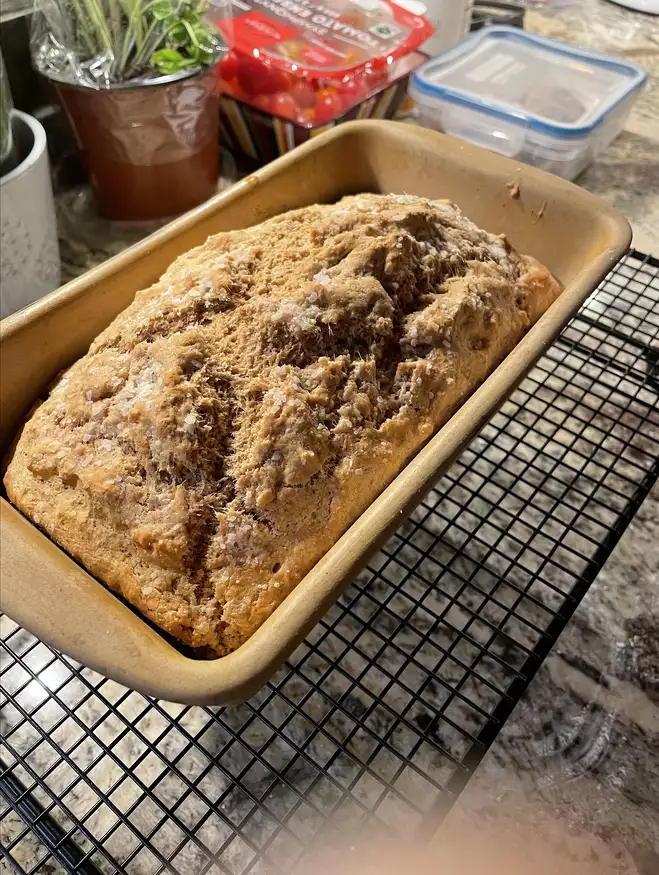

Whole wheat beer bread

Description
Good with soups, chili. Makes excellent toast. Flavor of bread will change, depending on type of beer used. Loaf comes out looking textured on top.
- Prep: 10 mins
- Cook: 50 mins
- Total: 1 hr
- Servings: 12
- Yield:1 9x5 inch loaf
Ingredients
- 1 1/2 cups all-purpose flour
- 1 1/2 cups whole wheat flour
- 4 1/2 teaspoons baking powder
- 1 1/2 teaspoons salt
- 1/3 cup packed brown sugar
- 1 (12 fluid ounce) can or bottle beer
Steps
-
Preheat oven to 350 degrees F (175 degrees C). Lightly grease a 9x5 inch loaf pan.
-
In a large mixing bowl, combine all-purpose flour, whole wheat flour, baking powder,
salt and brown sugar. Pour in beer, stir until a stiff batter is formed. It may be
necessary to mix dough with your hands. Scrape dough into prepared loaf pan.
-
Bake in preheated oven for 50 to 60 minutes, until a toothpick inserted into center
of the loaf comes out clean.
To index